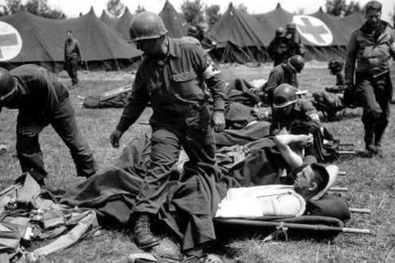

Résumé de la Bataille Normandie
La Bataille de Normandie, également connue sous le nom de "D-Day" ou "Débarquement de Normandie", a été l'une des opérations militaires les plus importantes de la Seconde Guerre mondiale, se déroulant du 6 juin 1944 au 25 août 1944.
- Contexte : Les forces alliées ont planifié l'invasion de l'Europe occupée par les nazis pour ouvrir un nouveau front et soulager la pression sur l'Union soviétique à l'Est.
- Déroulement :
- 6 juin 1944 : Début du débarquement sur les plages de Normandie, avec des forces alliées provenant des États-Unis, du Royaume-Uni, du Canada et d'autres nations.
- Juin-juillet 1944 : Intenses combats pour sécuriser les plages et établir des têtes de pont.
- Juillet-août 1944 : Avancée alliée à travers la Normandie, libération de Caen et de Saint-Lô, encerclement des forces allemandes dans la poche de Falaise.
- 25 août 1944 : Libération de Paris, marquant la fin de la campagne de Normandie.
- Issue : Victoire décisive des Alliés, ouvrant la voie à la libération de l'Europe occidentale de l'occupation nazie.
- Importance : La Bataille de Normandie a été un tournant crucial dans la guerre, permettant aux forces alliées de repousser les Allemands et de commencer la libération de l'Europe occidentale.
